Sharing Models
Sharing a model
How to get the link
There are two ways to get the link to share a model.
- The first way to get a link to share one model is by clicking on the share icon when viewing a model. To find how to view this informational panel, go to viewing model details. 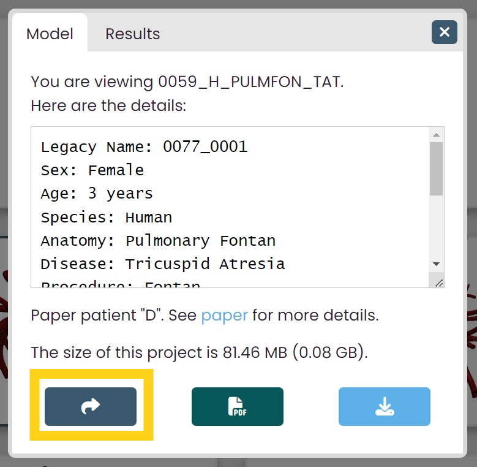 By clicking on this icon, you will copy the link to share the model. The link may look something like https://www.vascularmodel.com/share.html?NThOWTE4OU4_.
- The other way to get a link to share one model is to click on the Get Shareable Link icon when you only have one model selected. 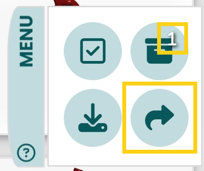 For more information about the Share icon, go to The Share Icon.
Viewing the shared model
When you enter the shareable link into a browser, a descripton of the shared model will appear. The first displayed information about the model is its name and image. In the example below, someone is viewing model 0059_H_PULMFON_TAT.
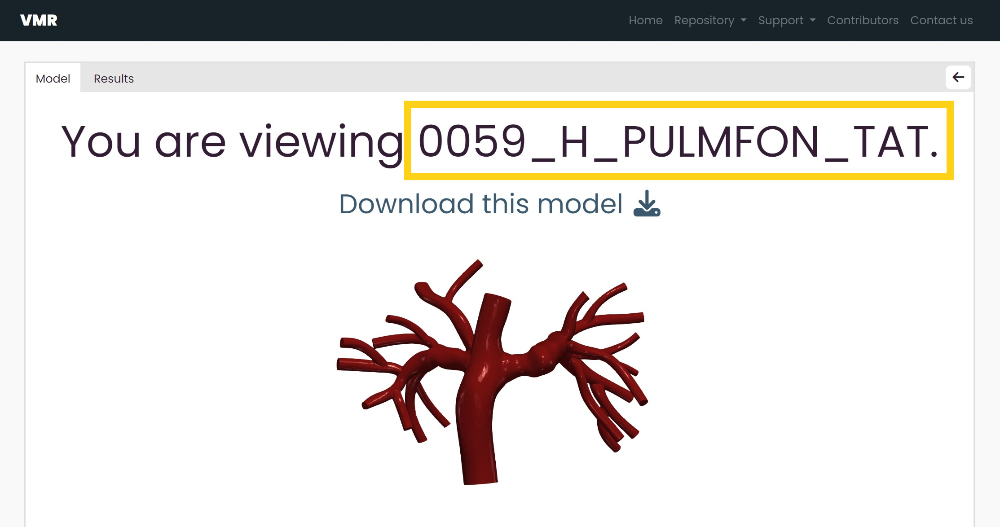 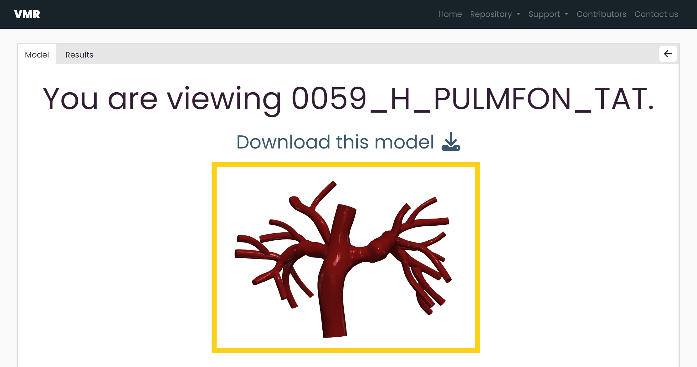To download the model that was shared, click the download link under the name of the model. A download confirmation message will appear upon clicking the link.
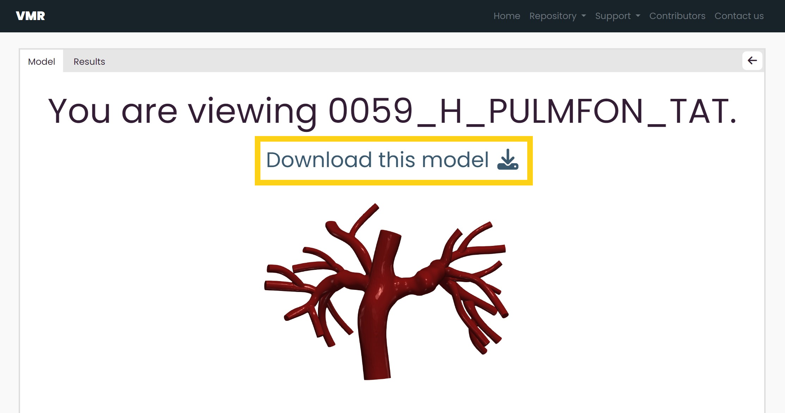
Below the name and image is more information about the model. Here, you can also know the size of the model's project files and view additional notes on the model.
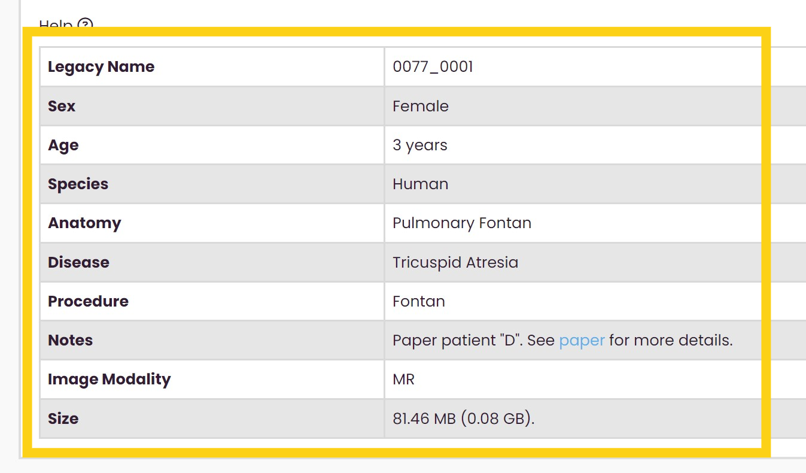You can also return to the dataset by clicking on the Return to Gallery icon on the top right of the page.
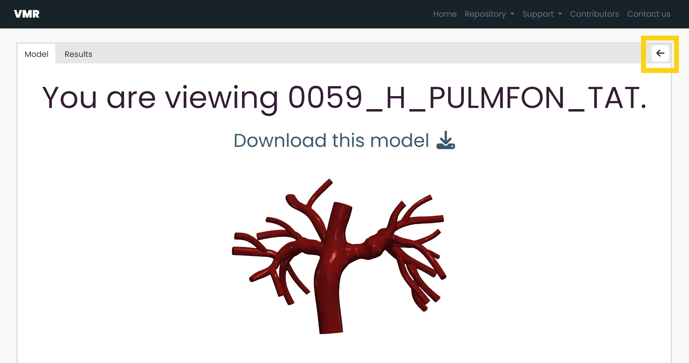If a model has simulation results avaliable, there will be a Results tab at the top left of the page. Click on this tab to view the model's simulation results.
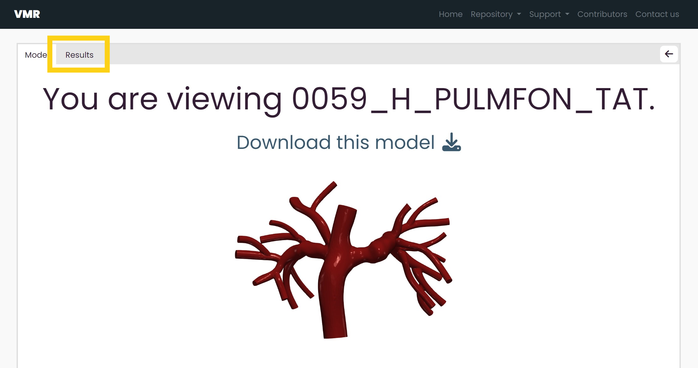 For more information on the simulation results share page, go to viewing the shared result.Sharing a simulation result
How to get the link
There is only one way to share a simulation result, and that is through the gallery by clicking on an individual model.
Once viewing an individual model, click on the Results tab and use the dropdown menu to toggle between the simulation result that you want to share.
Click on the share button when you are viewing the simulation result that you want to share. You cannot share multiple simulation results at the same time.
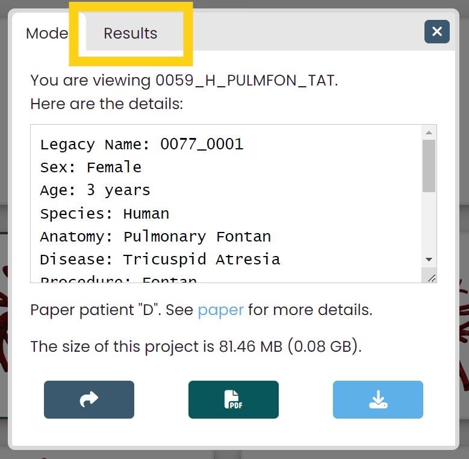 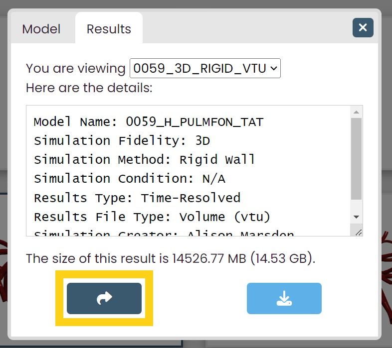By clicking on this icon, you will copy the link to share the simulation result. The link may look something like https://www.vascularmodel.com/share.html?NDVOWTI4Mk5S.
Viewing the shared result
If a simulation result specifically was shared, then that shared result will be the one selected in the dropdown menu and currently displayed. If the simulation result page was accessed through the Results tab after viewing a shared model, then the first simulation result in the dropdown menu is selected and displayed.
The name of the simulation result you are viewing is specified at the top of the page. To toggle between simulation results from the model, click on the dropdown menu that follows "You are viewing"
 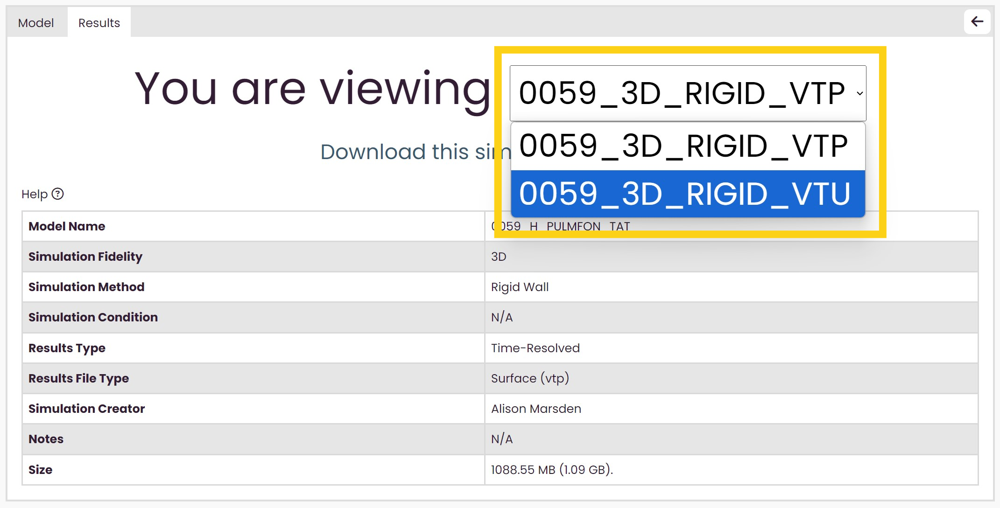
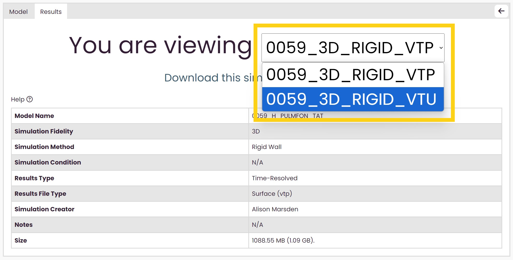
Below the name of the simulation result you are viewing, there is a download link to download the simulation result you are viewing. A download confirmation message will appear upon clicking the link.
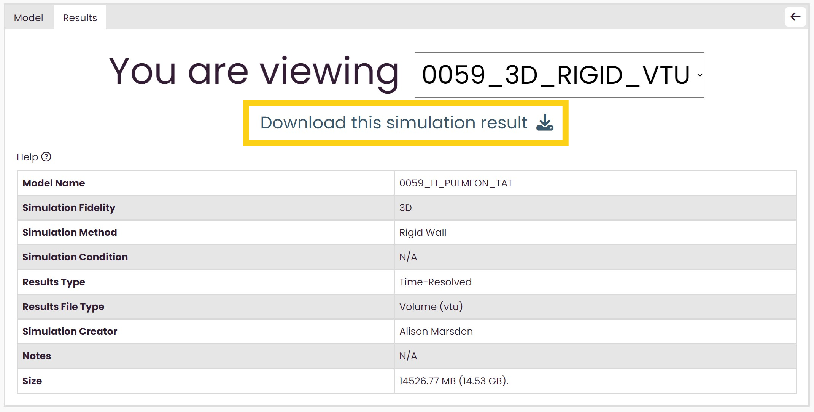
Below the download link, there is information on the simulation result, including the size of the simulation result file and additional notes on the simulation result if applicable.
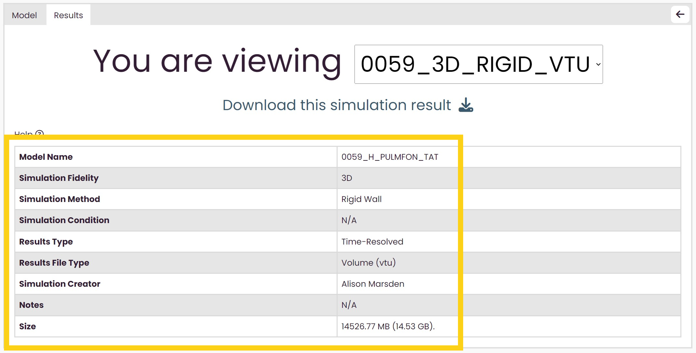Sharing multiple models
How to get the link
To share multiple models, select the models you want to share and then click on the Select All icon in the menu bar.
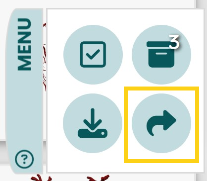For more information about the Select icon, go to The Select and Deselect All Icon.
Viewing the shared models
When you create a link to share multiple models, you can then view your selected models in a table.
Three functions are avaliable on this page. You can see how many models you are viewing and view a brief summary of each model.
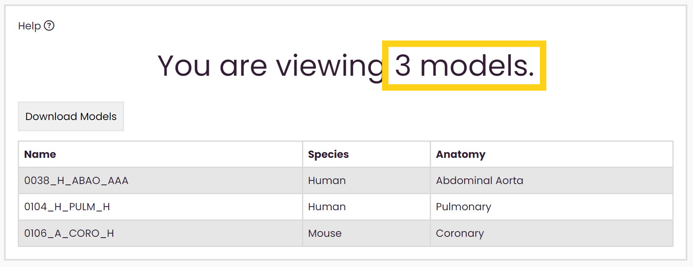 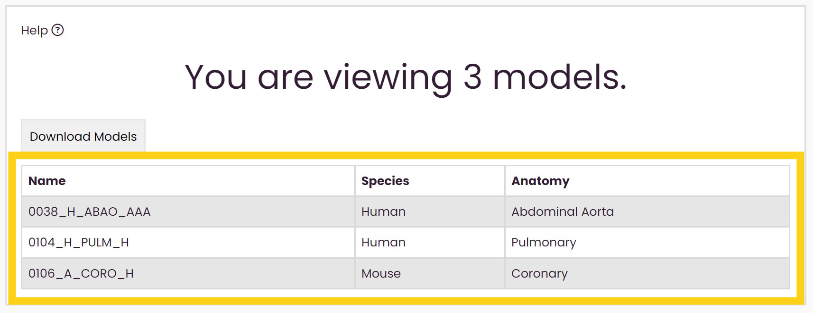Above is an example of what this page might look like. In this case, someone has shared 107 models.
You can also download all of the project files of the models by clicking on the download button. Upon clicking download, a confirmation message will appear.
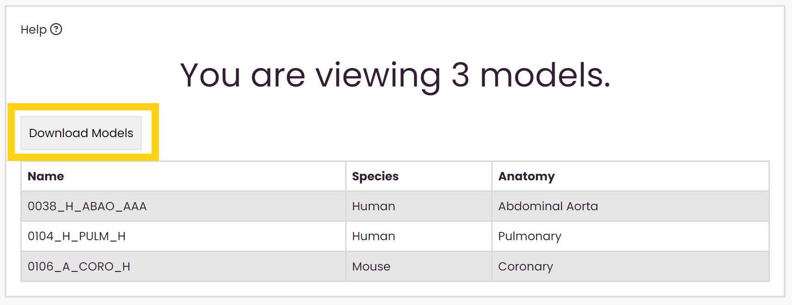 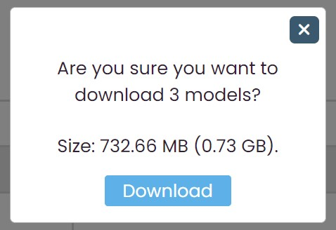To view models individually, click on the model's row, and a new page will open viewing the individual model.
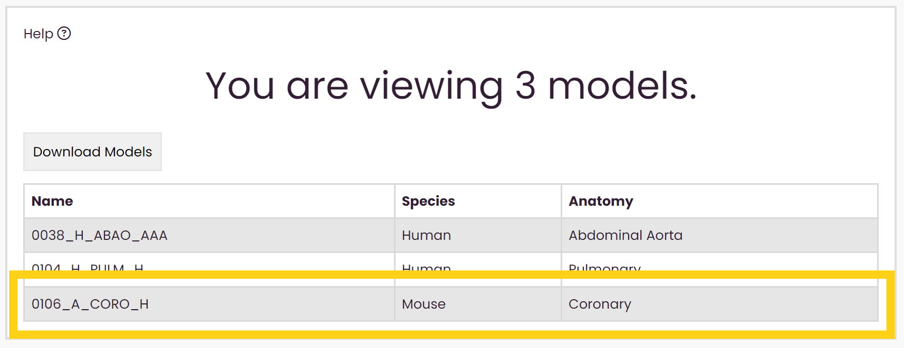 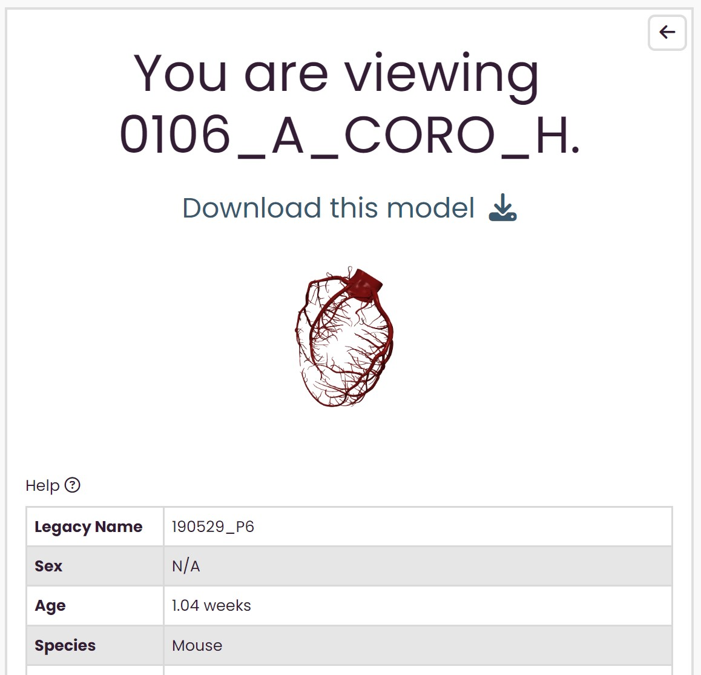For more information about viewing this page, go to viewing the shared model.